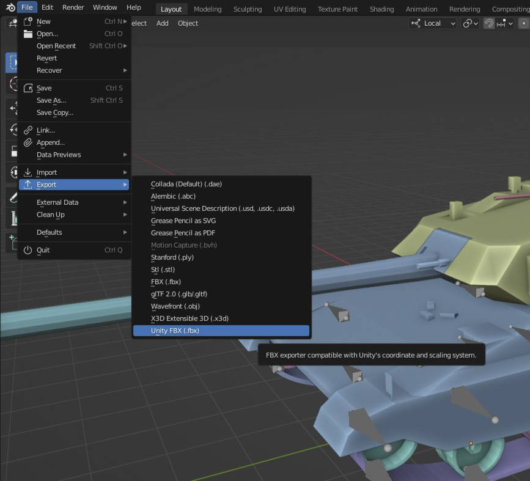
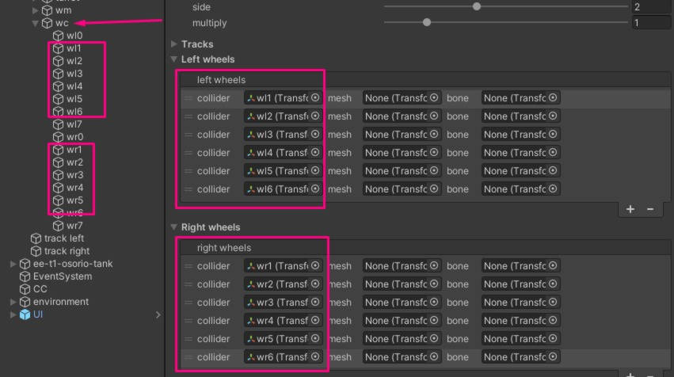
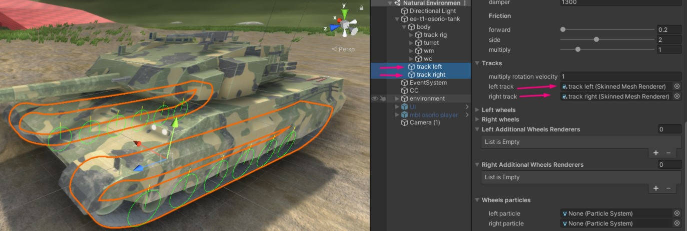
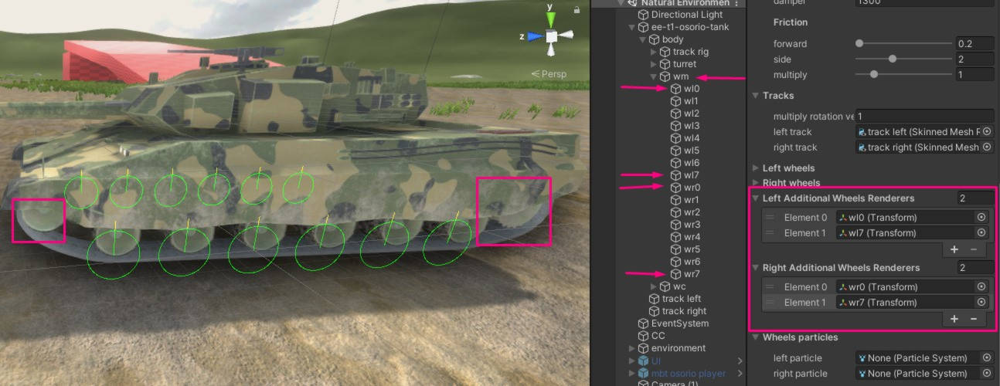
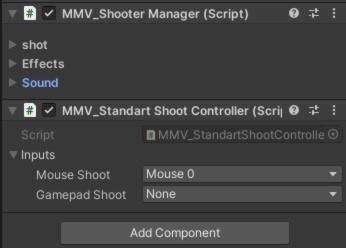
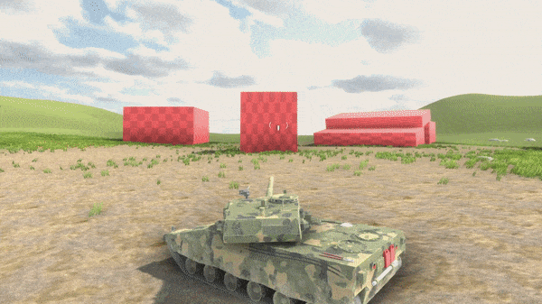

Since you read the Overview , we are finally going to create our vehicle
using standard MMV components. Creating the vehicle from scratch requires
the user to follow some important configuration steps especially when
exporting the model to Unity.
For this tutorial, we separated it by steps to make it simpler, remembering
that all the options of the components will not be explained for didactic
reasons. All explanation about the properties will be done in Advanced Components Configuration bsada.
This is a part that may raise questions or some unknown issue, please report your feedback
on GitHub if you have any problems so we can
improve our documentation.
For everything to work well, it is important to have the model configured following some
rules, mostly related to transformation. All objects have the axis configured correctly and the
scale of the objects must be applied.
In the case of MBT vehicles (tanks), you need to be extra careful because these vehicles use tracks
on the wheels.
We are going to use Blender in this tutorial, but the settings apply to
all 3D modeling software.
Check the world scale, leave it as meters and with the scale 1.
2. All objects need to have their identity rotation and scale, the forward axis of the object needs to
be correct (in Blender’s case, the forward is -Y, up Z), follows the example below.
3. Each wheel must be an object, they can have the same mesh as long as it’s one mesh for the right
wheels and another one for the left wheels.
Keep the vehicle in the correct starting position, in the center, with the wheels touching the ground.
There are two things we need to do: configure the armature and adjust the mat UV.
The armor is based on a ROOT bone that is in the center of the vehicle, and one bone per wheel is mandatory,
the other bones are optional to help with the distribution of the mesh.
It might be interesting to rename all the parts of the model, especially the ones that will be used in the MMV like wheels and bones.
As you can see, we have separated the right and left wheels.The bones that will be used in also contain similar names, the ones that were
not named are additional bones that will not be used by the system, you can use the names you want, this is just to help with the organization.
We must remember that all exported objects must have their identity transformation
inside the unity (rotation and scale) as in the example:
The export configuration will vary from program to program and unfortunately we won’t
be able to explain the process to everyone. In blender, doing this export can generate
a headache because the axes can be rotated or the model scale can be wrong mainly
because our vehicle model can have rig.
Luckily a good soul made a plugin for blender that takes care of that and helps us export
models to unity with the correct axes and scale setup. Install this plugin in blender, and
you will have this export option:

From there just choose the location where to save and import in Unity.
Now we have to configure the model in unity, calm down, it’s simple. We just need to separate
the wheels so that the physics system can understand what mesh is and what is will apply wheel physics.
Basically we have to transform our model hierarchy which is this:
“wm” which is the mesh that follows the movement of the wheel.
“bone” which is the bone that accompanies the wheel and makes the belt move.
Let’s add all the “WCs” of the wheels and the vehicle physics will already be working.

As you can see, some wheels were ignored, it’s the front and rear wheels, that’s because
it doesn’t have suspension and doesn’t apply physics, just the middle wheels. These ignored
wheels just follow the rotation of the other wheels, but we will see that in the future.
The result should be this:
You can increase or decrease the size of the wheel to better fit your model with the “radius” property.
In the “spring” section are the suspension, length, strength and softness options.
In the “wheel” part, it is possible to configure how much the wheel will slide forward and to the sides, most of the time it is better to leave the “forward” friction at low and “side” higher, so the vehicle will be able to accelerate easily however it will not slide sideways in curves.
7. If you take a closer look you will see that the mat texture is still not moving along with
the wheels, to solve this add the left and right mats in the properties.

8. When the wheels were added, we left some behind, the front and rear ones because they didn’t apply
physics, they just follow the rotation, they are optional and will vary from vehicle to vehicle. Just
add these additional wheels and they will work.

All the simple settings for moving your vehicle are now ready, we can finally add some script to
control the vehicle!
The MMV already comes with a standard control for the player, just add the script and check if the
input axis are correct and the vehicle will be able to be controlled.
A standard camera controller is already included, which enables first-person view as well as
sniper mode. This controller also tells the turret which vehicle to aim for. When you add it,
it already sets up a default third-person camera.
Change the vehicle to another Layer because the camera has “Camera Collider”, so if the
vehicle is on the same layer as the camera’s collider, it can cause problems.
As said, the default camera controller already tells the turret where to aim, but we have to configure
it for it to work. Add the vehicle’s turret and cannon to your vehicle’s “Turret” tab.
It is interesting to have a marker on the screen to show where the tower is
pointing and which is the center of the screen, for that we must create a
Canvas
with two elements, an Image
that is in the center of the screen just as a marker and another Image that will
be the marker from the forward of the cannon.On your Canvas add the standard
UI script, in it you must add the “forward” marker of the cannon.
Once the turret, UI, and scope are set up, you can finally add the fire system to your
vehicle. On the vehicle itself add a fire control component, at the end of the vehicle’s
cannon create an empty GameObject and call it “spawn”. Add the spawn in the shooting
component, from there several options will appear, but only one will be important at the
moment, which is the “Bullet” property.
A bullet is nothing more than a prefab. An object with a RigidBody and a collider marked
as a trigger. Following the image configuration. The bullet must have a projectile component.
In it there are not so many properties other than explosion effects that you can add, that’s because
the main properties of the projectile is done by the shot manager.
The fire manager does everything we need, plus we need to tell it when to fire, so we need to script
it or use the standard fire control component. To use the standard component, just add it to the shot
manager and configure player inputs.


In the demo appears particles because I added to the shot manager, feel free to add if you want.


{kind=link}
{kind=link}
{kind=link}
{kind=link}
{kind=link}
{kind=link}
{kind=link}
{kind=link}
{kind=link}
{kind=link}
{kind=link}
{kind=link}
{kind=link}
{kind=link}
{kind=link}
{kind=link}
{kind=link}

{kind=link}
{kind=link}
{kind=link}

{kind=link}
{kind=link}